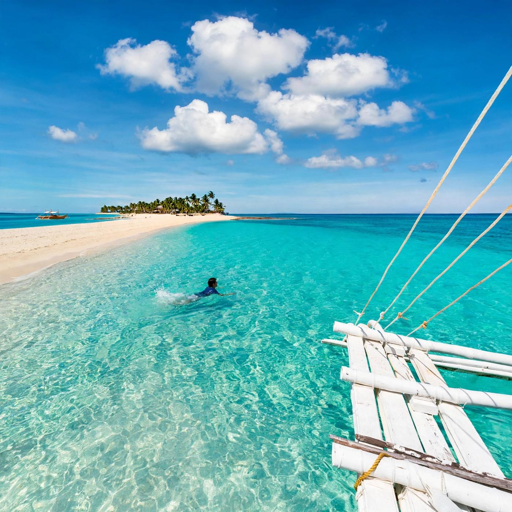

Daanbantayan is the town at the northern tip of Cebu, and plenty of people pass through it without noticing. They step off the bus at Maya, buy a boat ticket and are on Malapascua within the hour. Yet Daanbantayan logged 59,435 tourist arrivals from January to August 2026, the third-highest count in Cebu Province after Cordova and Santa Fe.
Malapascua accounts for much of that, but Daanbantayan is bigger than one island. The municipality also takes in Carnaza, a quiet island two to three hours offshore, the seabird and sea snake sanctuary at Gato Island, and a mainland town with one of the oldest churches in the north. This Daanbantayan travel guide covers all of it, plus the part that confuses first-timers most: the town has two ports, and each one serves a different island.
The town sits at the northern tip of Cebu, about 136 kilometers north of Cebu City, with the Visayan Sea to the north and Bantayan Island to the west. Its name joins two Cebuano words, daan (old) and bantayan (lookout), from the watchtowers that once warned villagers of raiders arriving by sea.

How to Get to Daanbantayan
Buses leave Cebu North Bus Terminal throughout the day. Ceres runs both air-conditioned and ordinary buses, with the first air-conditioned trips leaving very early, around 2 a.m. Expect four to five hours on the road and a fare of roughly ₱220 to ₱305. Shared vans are a little quicker, about three and a half to four hours, and cost around ₱250 to ₱350. They leave when full, so the wait at the terminal varies.
Before you board, tell the conductor which port you want. Maya Port is for Malapascua. Tapilon Port is for Carnaza. They are different stops on the same northern road, and missing yours on a bus that is still moving toward the tip of the island is an easy mistake. If your boat leaves in the morning, take the earliest trip you can and keep a buffer for traffic in the northern towns.
Daanbantayan's Two Ports: Maya and Tapilon
Maya Port for Malapascua
At Maya, pay the ₱120 environmental fee and the ₱20 passenger fee at the tourism office, then buy a ₱200 boat ticket at the pier booth. Boats run from about 5 a.m. until about 5 p.m. and leave once roughly 15 passengers have gathered, so you might wait half an hour on a slow afternoon. Miss the last trip and the only option is a private charter, quoted at about ₱1,500 to ₱2,500.
Malapascua's draw is the thresher shark dive at Monad Shoal, which takes place at dawn. If that is your reason for coming, our Malapascua thresher sharks dive guide explains how the early-morning dive works and what to book.
Tapilon Port for Carnaza
Carnaza is a different kind of trip. The boat from Tapilon takes two to three hours depending on the sea, and the fare is around ₱300. The catch is the schedule: there is usually just one regular trip each way per day. The boat comes in from the island in the morning and goes back out in the afternoon.
In practice, that means arriving at Tapilon by midday, crossing in the afternoon and spending at least one night on the island before the morning boat brings you back. A day trip only works if your group hires a boat for itself. That is pricey for two people, but it starts to make sense for a group of ten or more who split the cost.
Carnaza Island, Daanbantayan's Quiet Side
Carnaza is a barangay of Daanbantayan, an island of about 174 hectares whose outline people often compare to a turtle. It is low and rolling, rising to about 55 meters, with white-sand beaches broken up by cliffs and dark rock. Skull Cove is the spot most visitors ask for. The rest of the island is fishing villages, coconut and corn plots, and small coves you can often have to yourself on a weekday.
Sleeping options are basic. Carnaza Eco Park, a privately run area, has simple wooden rooms and space for tents, and families on the island offer homestays with meals arranged on request. Seafood is the obvious thing to eat. Ask your host about prices when you arrive, and pay the eco park's entrance fee at the gate.
Power is limited. Many homes rely on solar panels, and lights can go off fairly early in the evening. Pack a power bank, a flashlight, enough cash for your whole stay, drinking water and some food of your own in case the small stores run low on a busy weekend. The upside is the night sky, which on a clear evening is crowded with stars.
Carnaza suits travelers who want quiet more than comfort. If you would rather have a choice of restaurants, resorts and paved roads, the beaches covered in our Bantayan Island guide are a better match for the same northern Cebu trip.
Gato Island Marine Sanctuary
Gato Island is a rocky islet in the Visayan Sea, about 15 kilometers northwest of Malapascua and roughly 50 minutes away by boat. It belongs to Daanbantayan, which declared it a fish and sea snake sanctuary in 1997 and in 2001 extended the protected area to two nautical miles around the island.
Divers go for the underwater tunnel that cuts through the rock, the sharks that rest in it during the day, and the banded sea kraits that are common around the island. Seabirds nest on the cliffs above. Trips are arranged through the dive shops on Malapascua, since there is no regular passenger boat. Sea kraits are venomous, so look but never touch, and snorkelers should stay close to their guide.
Things to Do in Daanbantayan Town
The Archdiocesan Shrine of Santa Rosa de Lima in the town center was opened in 1858 and completed in 1886. It was damaged in the magnitude 6.9 earthquake that hit northern Cebu on September 30, 2025, and it is among the heritage churches in the north set for rehabilitation in 2026. Parts of it may be closed or under repair, so view it from the plaza and ask at the parish office before going inside.
Late August is the town's busiest time. The Haladaya Festival runs from August 21 to 30 and honors Datu Daya, the legendary founder of Daanbantayan, with the street dancing held on the final day. Rooms on the mainland and on Malapascua fill up that week, so book ahead if your dates fall in that window.
Best Time to Visit Daanbantayan
Every trip here depends on boats, and boats depend on the weather. The drier months from about March to May usually bring the calmest crossings. From June onward, the southwest monsoon and passing storms can cancel trips at short notice, and the Carnaza run, being the longest crossing, is the first to stop. If a storm signal is raised anywhere in the Visayas, expect the coast guard to hold small boats in port.
Bring more cash than you think you need. Boat fares, port fees and homestays are paid in cash, and you should not count on finding an ATM on Carnaza. Fares and schedules on these routes change with fuel prices and the season, so treat the figures above as a guide and confirm them at the port or with the municipal tourism office in Daanbantayan.
A 3-Day Daanbantayan Itinerary
A good loop for three days looks like this. On day one, take an early bus to Tapilon, cross to Carnaza in the afternoon and spend the night. On day two, ride the morning boat back, hire a tricycle at the port for the short trip north to Maya and reach Malapascua by afternoon. Keep day three for a dawn dive at Monad Shoal or a boat to Gato Island, then catch the boat back to Maya and a bus south.
Daanbantayan rewards anyone willing to go one port further than the crowd. Malapascua still gets the headlines, but an extra night on Carnaza, a morning at Gato or an hour in the old town turns a quick dive stop into a proper trip to the far north of Cebu.

Comments
No comments yet. Been here recently? Share a tip or ask a question.
Leave a Reply